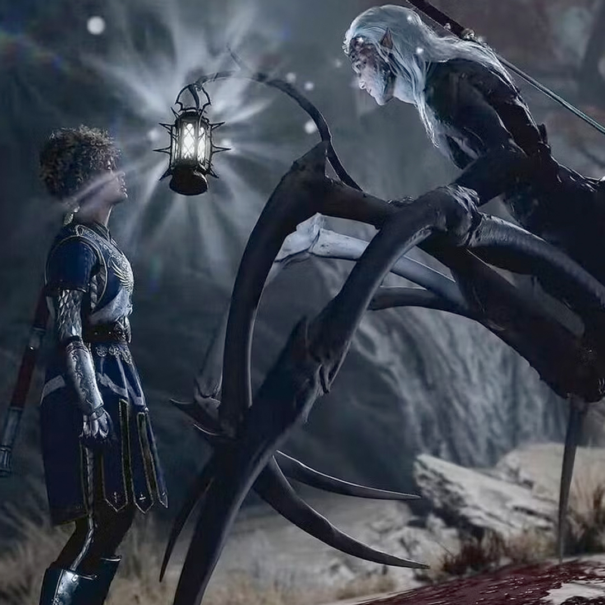
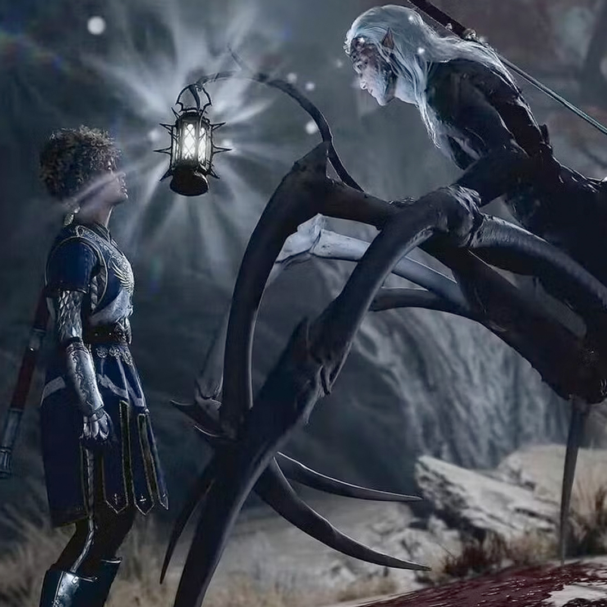

How I Got Here
Short Version
I have Long Covid and the outside world is not super accesible to me anymore. I find respite in video games and would like to share some of my favorite ones to escape to with you.
Long Version
I've been playing video games my ENTIRE life. My family started me off young, with an Atari 2600 playing Popeye. From there it was almost every video game console as they came out. Gameboy, Nintendo, Super Nintendo, N64, Playstation, XBOX, a gaming laptop...it goes on. Playing Mario Party with friends, Frogger and Space Invaders with my mother, getting scolded for playing Grand Theft Auto by my father. I even played MS-DOS games on an old IBM I had, and remember playing games on old Macs in computer lab. Games have always been a part of my life in some way.
As I got older, and free time became less, I spent less time playing. The last console I ended up with was an XBOX360 that I brought with me when I moved out of my parent's house, but it didn't get much attention other than running Netflix and YouTube.
Late 2019 I became very sick and spent the 2 weeks I got off from work during the holidays laid up in bed watching The Witcher I had an XBOX360 at the time, and had previously purchased The Witcher games but never played them all the way through. A friend highly recommended The Witcher 3, so I fired the XBOX up and gave it a shot. This reignited my love for gaming.
As the world came to a standstill in 2020, I decided to build a gaming PC. With this, I was able to not only play modern games that I'd been itching to play, but I was able to play "older" games I was super nostalgic for, like World of Warcraft and Destiny. As I dealt with another sickness and then the lingering effects from what I learned was Covid, I used games as a way to escape the harsh reality that I was now confronted with. I escaped into MMOs and made new friends, hung out with them digitally - doing things like attending weddings in FFXIV and raiding in WoW. I also played games like WARZONE and Destiny 2 with real life friends - and gaming friends I had made over a decade ago.
All that to say, I'm about to show you some of the places I've visited since the outside world has become less accessible to me. Below you'll find some of my favorite virtual spaces to spend time in.
World of Warcraft


Playing both Retail and Classic versions of WoW, I got to visit all of my old favorite places, as well as exciting new ones. At least when I went to Stormwind this time, I wasn't on dial-up. I would probably still be playing WoW were it not for the awful news that came out about Blizzard. I dropped the game almost immediately, but kept in contact with friends I'd made.
Back to Top
Final Fantasy XIV
I also picked up FFXIV through the recommendation of a friend, and jumpted to it as a substitute for WoW initially. I quickly fell in love with the game though. The story, albeit long, is incredible, and the music even moreso. I'd played a rogue in WoW, so I picked up Ninja in FFXIV, and it gave me a nice challenge once I moved into harder content.
Back to Top
Apex Legends
Or Apex Ledgends, as it likes to trend on Twitter as, for some reason. My first Battle Royale. I was working at a design agency in downtown STL at the time when someone on my team asked if I'd heard of it. I said no, and they mentioned it sounded like something I'd like. As soon as I got home from work that day, I watched a trailer and immediately fell in love with it. The lore, the characters, the gameplay, the map and sound design, all of it (except for the matchmaking, I have my own personal beef with that). I picked Pathfinder as my main Legend, and still play him to this day 5 years later.
Back to Top
Call of Duty
I'm not a huge fan of the Call of Duty community and stereotypical COD gamer, but I LOVE FPS games and have made so many friends throughout the years playing different CODs. With my new PC I got to revisit old favorites with old friends I had made, and got to experience peak Battle Royale gaming with some of my hockey teammates.
Back to Top
Destiny 2

I have such a love-hate relationship with this game. I played Destiny when it first released, and was a part of Destiny 2's launch as well. I was so excited to pick it back up with my new PC. I absolutely love the world-building and amazing design of this game. The immersion is unreal. Not to mention the soundtrack! I unfortunately also get a bit too hooked, and there are SO MANY ACHIEVEMENTS. I really have to limit myself..and tend to be not great at that, so for that reason, I don't currently play Destiny 2.
Back to Top
Baldur's Gate 3
 

My latest obsession, and I haven't even made it halfway through. This is another one that I love every aspect of. I can stop and talk to every single person in a town and they have something to say. There are so many amazing small details to take in. The story is great, the voice acting is amazing, and the music is so immersive. Every creature is so well designed, this is another game I can get completely lost in.
Back to Top
Fortnite
I'm not afraid to admit that I'm in my 30s and play Fortnite! I originally picked it up during lockdown to play with my nephew, but I quickly got hooked. Luckily for me, there's a mode that doesn't require you to build. A couple of my buddies that I played Call of Duty with also play Fortnite, so I get to play with them as well. I have this game to thank for a couple of newer friendships, and the people that I've met are some of the most genuine I've ever known.
Back to Top